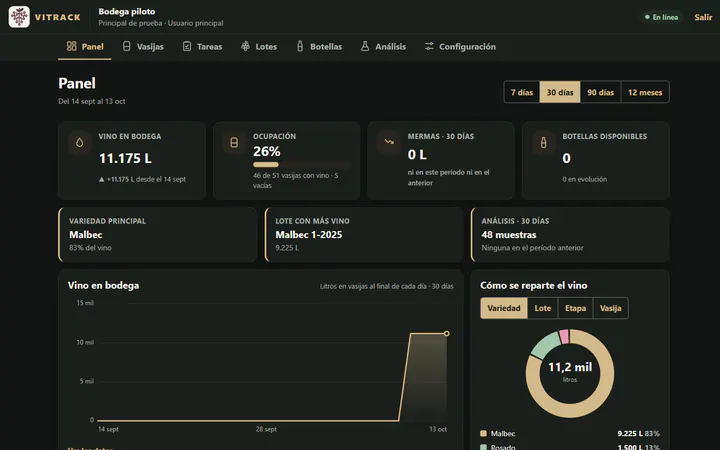
VITRACK
En piloto con una bodegaGestión para bodegas chicas y medianas: vasijas, lotes, análisis y botellas, desde la computadora o el celular, también sin señal.
Soy desarrollador web y diseñador UX/UI. Combino tecnología, diseño e inteligencia artificial para transformar ideas en productos digitales funcionales, intuitivos y cuidadosamente diseñados, desde la conceptualización hasta su implementación.
Perfil
Vengo de más de siete años en ventas y atención al cliente, y de ahí traigo la costumbre de escuchar antes de proponer. En 2024 estudié desarrollo front-end y entre 2025 y 2026 la carrera de Diseño UX/UI. Desde entonces diseño y programo mis propias aplicaciones, de la primera entrevista hasta publicarlas.
Entrevistas, encuestas, card sorting, tree testing y evaluación heurística. En Zonaprop, el tree test mostró que el problema no eran las tareas sino cómo estaban nombrados los filtros.
Diseño en Figma con tokens, componentes y estados, con el contraste y el foco resueltos desde el principio. Después lo programo yo, así que lo que dibujo tiene que poder construirse.
React, Next.js y TypeScript en la interfaz; Supabase y PostgreSQL con las reglas y los permisos en la base de datos; tests unitarios y de punta a punta antes de publicar.
Proyectos recientes · octubre 2026
En los dos definí el producto, diseñé las pantallas y desarrollé la interfaz, el servidor y la base de datos, con permisos por rol y tests. Cada ficha dice en qué etapa está; el proceso completo, en la página de cada uno.

Gestión para bodegas chicas y medianas: vasijas, lotes, análisis y botellas, desde la computadora o el celular, también sin señal.
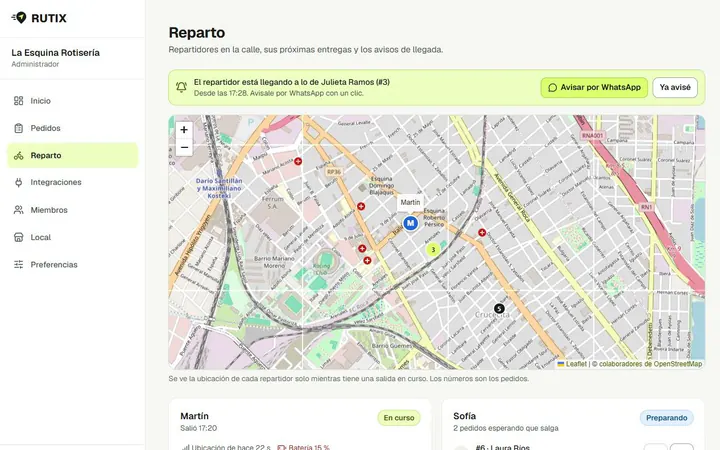
Reparto para restaurantes y rotiserías: pedidos, repartidores con GPS y el pedido en camino, en el mapa, para quien lo espera.
Apps propias · cinco paradas
Taku es el personaje que acompaña las aplicaciones que diseño y programo por mi cuenta. Cada una resuelve un problema distinto y Taku se viste para la ocasión, pero su papel es siempre el mismo: explicar en el momento justo y no estorbar el resto del tiempo. Elegí una parada del mapa para ver cada app.
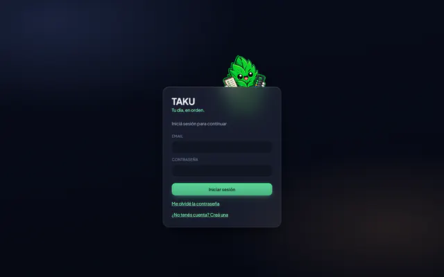
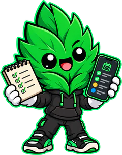
Tu día, en orden.
Calendario, gastos, facturas y tareas en una sola PWA, con pestañas que arma cada persona: nombre, color y campos propios. Rechaza contraseñas que ya aparecieron en filtraciones sin que la contraseña salga del navegador.
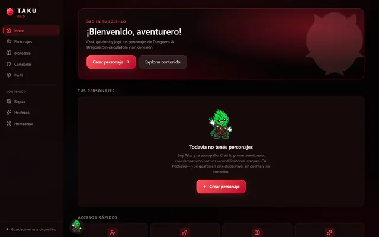
Tu compañero de aventura.
Crear, gestionar y jugar personajes de Dungeons & Dragons con reglas 2014 y 2024. La ficha se calcula a partir del estado del personaje, así los números nunca dejan de coincidir. Funciona sin conexión y sin cuenta.
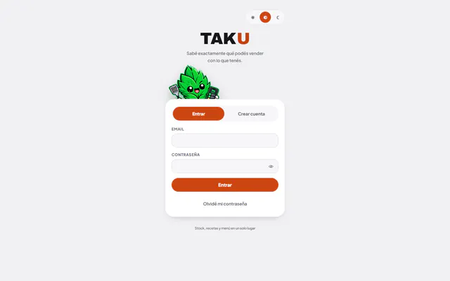
¿Qué podés vender con lo que tenés?
Conecta el stock de ingredientes con las recetas y el menú para calcular cuántas unidades de cada plato se pueden preparar ahora y qué ingrediente se va a acabar primero. Está en piloto con los datos reales de un emprendimiento gastronómico.
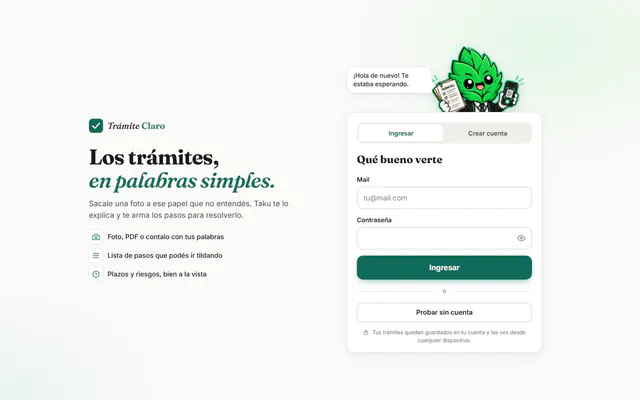
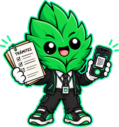
Los trámites, en palabras simples.
Le sacás una foto a ese papel que no entendés (o subís el PDF) y Taku te explica qué es, qué tan urgente es, hasta cuándo tenés y qué pasos seguir, con la web oficial del organismo. La presenté en la CoderCup de Coderhouse.
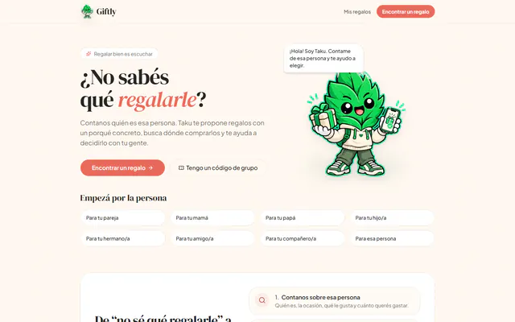
¿Qué le regalo?
Contás quién es esa persona y qué le gusta; Taku propone regalos con un porqué, busca precios en Mercado Libre y tu grupo vota hasta que hay ganador. Si la IA no responde, la app lo avisa en lugar de inventar.
Casos de UX
Dos proyectos de la carrera de Diseño UX/UI: qué investigué, qué decidí y en qué estado quedó cada uno, también lo que no se llegó a validar.
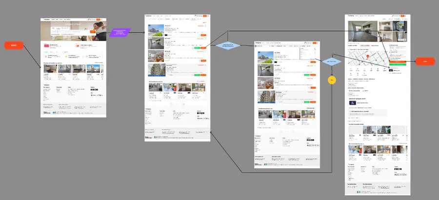
Investigué por qué buscar una propiedad cuesta más de lo que debería y propuse una nueva arquitectura para los filtros y los avisos.
80 %se equivocó de camino al buscar por tipo de anunciante en el tree test.
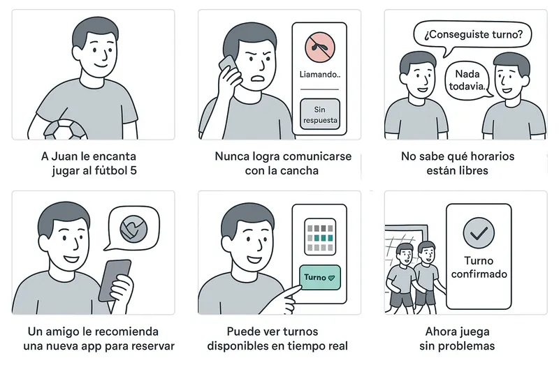
Una app para encontrar, reservar y completar equipo en canchas de fútbol, pádel y básquet, diseñada desde las entrevistas hasta el prototipo.
5 + 5entrevistas para entender el problema y personas en el test de usabilidad del prototipo.
Sitios web
Sitios que diseñé y desarrollé para emprendimientos y negocios entre 2024 y 2026, y algunos personales. Los dos más recientes suman un panel para que el negocio maneje precios y stock.
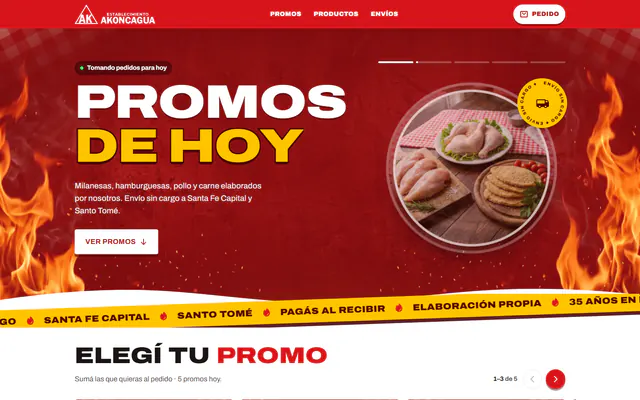
Promos del día con stock en vivo, pedido online con envío o retiro, y un panel que la administradora ya usa para manejar stock, precios y pedidos desde el celular.
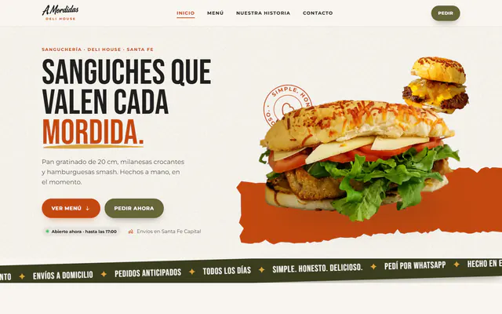
Carta interactiva con carrito: el pedido de WhatsApp se arma solo. Precios, stock y productos agotados se manejan desde un panel propio.
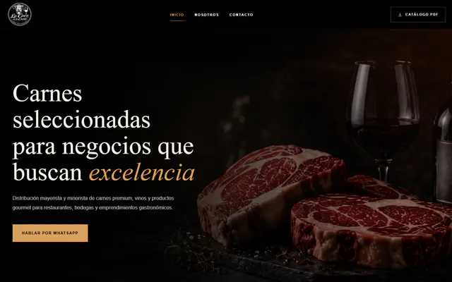
Distribución de carnes, vinos y productos gourmet para gastronomía, con catálogo y contacto por WhatsApp.
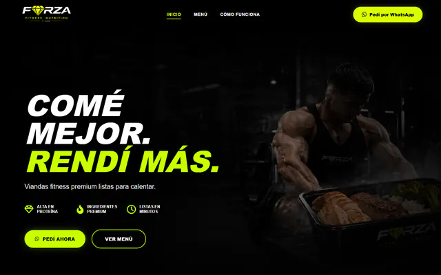
Viandas fitness: menú, cómo funciona y pedidos por WhatsApp.
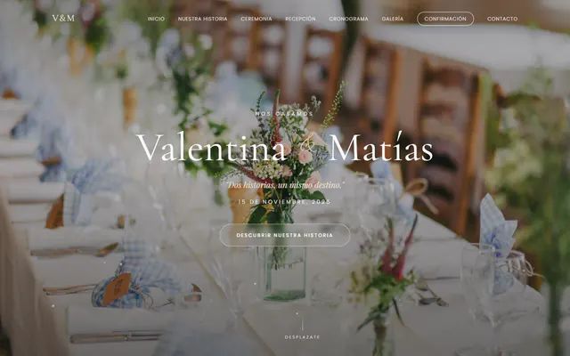
Invitación web de casamiento: la historia, los datos del día y la confirmación de asistencia.
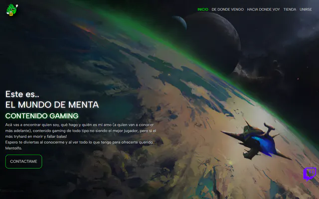
Sitio para un canal de streaming de videojuegos: quién es, qué juega y dónde verlo. Diseño y código, todo mío.
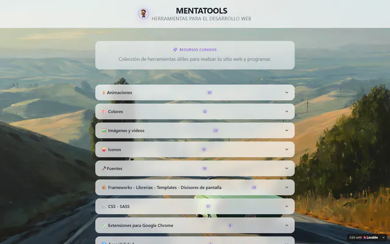
Directorio de herramientas y recursos para diseñar y programar sitios, por categorías. Hecho con Lovable.
Sobre mí
Llevo más de siete años en ventas y atención al cliente: turismo, vinos, cafeterías y, hoy, distribución gastronómica.
Es la experiencia que más uso al diseñar: escuchar antes de proponer, y entender tanto a quien usa el producto como al negocio que hay detrás. En 2024 hice el curso de Desarrollo Front-end en Coderhouse y entre 2025 y 2026 la carrera de Diseño UX/UI: UX/UI, UX/UI Avanzado, UX Research y UX Writing.
Desde entonces diseño y programo mis propias aplicaciones. Vivo en Santa Fe, Argentina, y busco sumarme a un equipo de producto.
Antes de abrir Figma hago entrevistas, encuestas o tests. En VITRACK, las reglas de los lotes y las botellas salieron de los audios de un enólogo, no de una suposición mía.
Trabajo con tokens, componentes y estados desde el diseño, porque después los programo yo. Lo que se dibuja tiene que poder construirse.
Desarrollo asistido por agentes de IA. Yo decido el modelo de datos, las reglas y cuándo algo está terminado, y reviso cada cambio. Por eso cada proyecto tiene tests unitarios, de base de datos y de punta a punta, y chequeos de accesibilidad con axe.
Cada proyecto documenta lo que todavía no hace. Un hueco a la vista se puede resolver; una función inventada, no.
Trayectoria
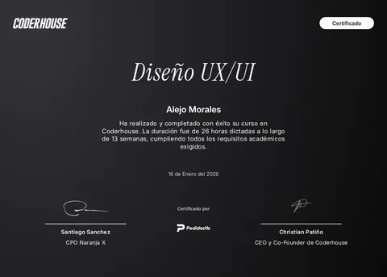
Diseño UX/UI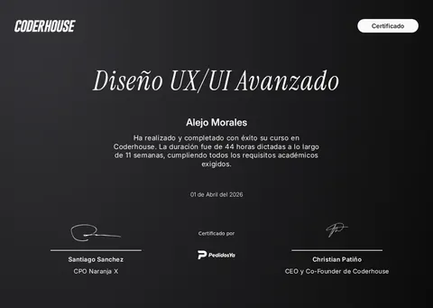
UX/UI Avanzado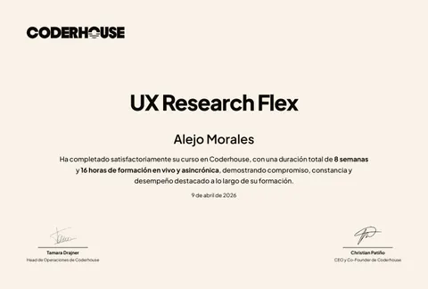
UX Research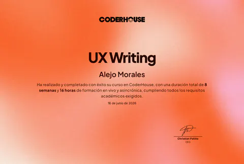
UX Writing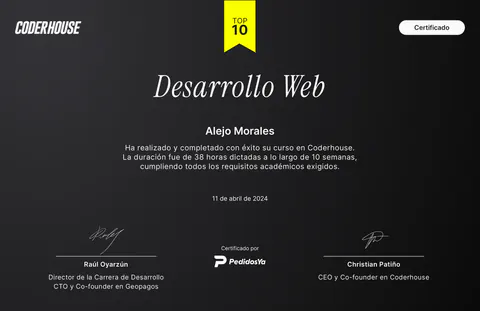
Desarrollo Front-endContacto
Como diseñador UX/UI o desarrollador front-end, full-time o part-time, remoto o híbrido desde Santa Fe. La forma más rápida de llegar a mí es por WhatsApp.